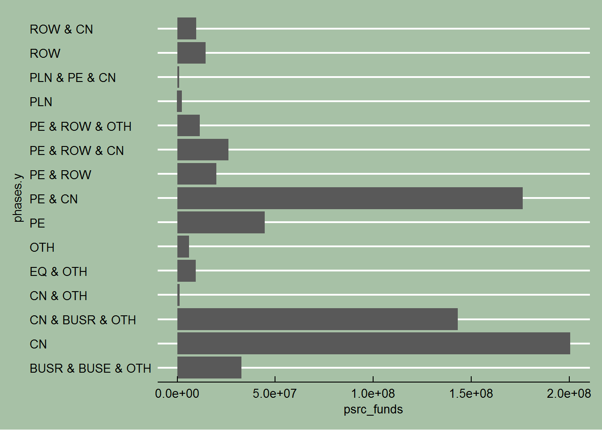
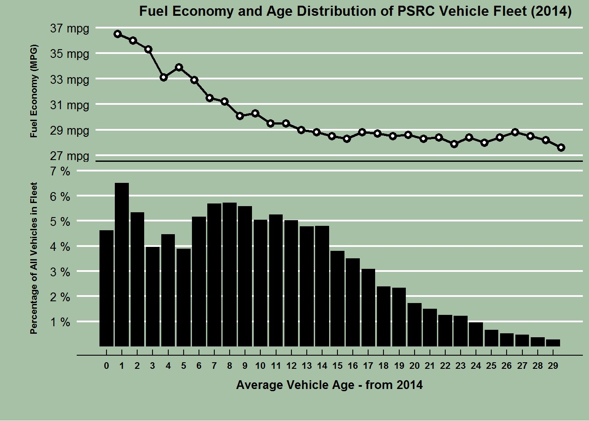

library(pacman)
pacman::p_load(grid, gridExtra,Rmisc,ggthemes,gsheet,RCurl,dplyr, xlsx, RODBC, ggmap, foreign, maptools, rgdal, ggplot2, devtools, broom, sp, maps, mapdata, googlesheets)
data <- data.frame(gsheet2tbl("https://docs.google.com/spreadsheets/d/1tVtrA8s1iv19OKXAmShSqQcT71zT7_DOk0ICsm8brrE/edit?usp=sharing"))
pop <- data.frame(gsheet2tbl("https://docs.google.com/spreadsheets/d/1xLc8rCkzZp5pqVh8LKzB9bsyeDNmnUXiZciAgvqOE88/edit?usp=sharing"))
data_sum<-data %>%
group_by(Sponsor, ID, Title, Total.Project.Cost) %>%
summarise(psrc_funds = sum(PSRC.Funds), phases=paste(Phase.s., collapse=" & "))
data_final<-left_join(pop, data_sum, by="ID") %>% select (X2010.Population, ID, phases.y, psrc_funds, Sponsor.y, Title.y)
data_final<-data_final[complete.cases(data_final),]
data_final$X2010.Population<-gsub(",","",data_final$X2010.Population)
data_final$X2010.Population<-as.numeric(data_final$X2010.Population)
data_final <- data_final %>% mutate (jurisdiction_size= ifelse(X2010.Population <50000, "Small Size Jurisdiction", ifelse(X2010.Population >= 50000 & X2010.Population < 100000, "Medium Size Jurisdictions",ifelse(X2010.Population >= 100000 & X2010.Population < 300000, "Large Size Jurisdiction", ifelse(X2010.Population >= 300000 , "Largest Size Jurisdiction", "Not Applicable")))))
ggplot(data_final, aes (phases.y,psrc_funds)) +geom_bar(stat="identity") + theme_economist() +coord_flip() +
theme(panel.background=element_rect(fill="#a7c1a6"), plot.background=element_rect(fill="#a7c1a6"))
library(pacman)
pacman::p_load (ggthemes,ggplot2,dplyr,reshape2,plyr,grid,devtools,gridExtra,extrafont,lattice,png,curl,TeachingDemos,pastecs,scales)
setwd("X:/Trans/STAFF/Reid/Vehicle Age/PSRC 2014 data")
ii<-read.csv("psrc_2014.csv",header=T)
fourteen<-ddply(ii, .(ageID), summarize, total=sum(count))
colnames(fourteen)<-c("age","total")
fourteen<-fourteen[1:30,]
mpg<-read.csv("2014 mpg.csv", header=T)
mpg<-mpg[2:31,]
data<-merge(mpg,fourteen, by="age")
data$Perc <- data$total / sum(data$total) * 100
g.bottom <- ggplot(data, aes(x = age, y = Perc)) +
geom_bar(stat="identity", fill="black") +
theme_economist() +
theme(plot.margin = unit(c(0,5,30,30),units="points"),axis.title.y = element_text(vjust =3,size=8,face="bold"), axis.title.x = element_text(vjust=-1,size=10,face="bold"),axis.text.x=element_text(size=8,face="bold"),
panel.background=element_rect(fill="#a7c1a6"), plot.background=element_rect(fill="#a7c1a6"))+
scale_x_continuous(breaks=0:29)+
scale_y_continuous(limits=c(0,7),breaks=1:7,labels=c("1 %","2 %","3 %","4 %","5 %","6 %","7 %"))+
labs(y = "Percentage of All Vehicles in Fleet",x = "Average Vehicle Age - from 2014")
g.top <- ggplot(data, aes(x = age, y = miles.per.gallon)) +
geom_line(size=1) +
geom_point(size=3)+
geom_point(size=1,color="white")+
theme_economist() +
scale_x_continuous(breaks=0:29)+
scale_y_continuous(limits=c(27,37),breaks=c(27,29,31,33,35,37),labels=c("27 mpg","29 mpg","31 mpg","33 mpg","35 mpg","37 mpg"))+ggtitle("Fuel Economy and Age Distribution of PSRC Vehicle Fleet (2014)")+
theme(plot.margin = unit(c(1,5,-10,30),units="points"), axis.title.y = element_text(vjust =3,size=8,face="bold"),plot.title = element_text(vjust=-.5,hjust=.8,size=12, face="bold"),axis.ticks.x = element_blank(), axis.text.x = element_blank(), axis.line.x=element_line(size=1),panel.background=element_rect(fill="#a7c1a6"), plot.background=element_rect(fill="#a7c1a6") )+
labs( y = "Fuel Economy (MPG)")
## plot graphs and set relative heights
grid.arrange(g.top,g.bottom, heights = c(1/2, 4/5))